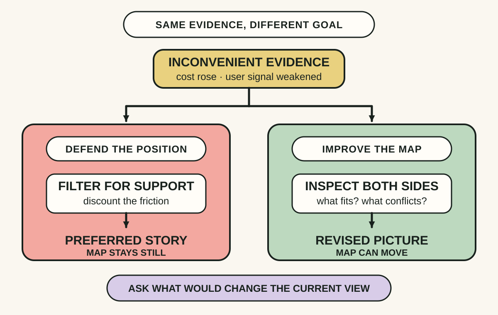
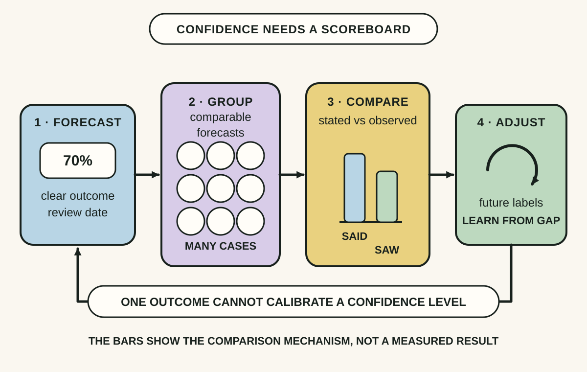
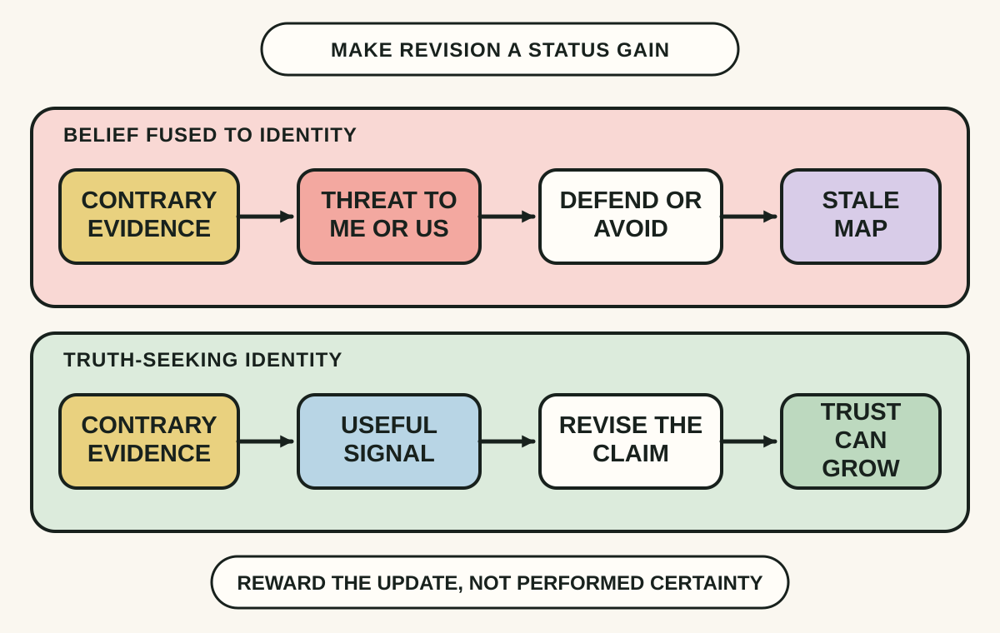

Daily lesson ·
The Scout Mindset
Reason more like a scout than a soldier: notice when a preferred conclusion is steering the search, express confidence in testable degrees and make belief revision a sign of good judgement rather than defeat.
Idea 1
Ask what would change your map #
The idea
Galef contrasts two motivations for reasoning. Soldier mindset tries to defend a belief or reach a preferred conclusion; scout mindset tries to form the most accurate available picture of the terrain, including facts that are inconvenient or disappointing.
These are modes, not fixed types of people. The practical question is not whether someone is intelligent or informed, but what their reasoning is trying to accomplish in this moment. A scout looks for signs that would raise or lower confidence instead of collecting only material that supports the starting position.

Why it matters
A team can perform careful analysis and still search in only one direction. Naming the desired conclusion and its possible falsifier makes hidden advocacy visible before it hardens into a delivery commitment.
Apply it today
Choose one decision for which you strongly prefer a particular answer.
Finish the sentence: I would lower my confidence if I observed...
Ask for the strongest available evidence about that observation before presenting your recommendation.
Caveat or failure mode
Scout mindset does not require endless doubt, equal weight for weak claims or passivity in conflict. Emergencies, negotiation and adversarial work can require decisive advocacy. Use scouting to improve the map and then act; also remember that calling yourself a scout can become its own flattering identity.
Idea 2
Match confidence to the evidence #
The idea
Galef treats confidence as something that can vary by degree rather than a switch between certain and uncertain. Calibration asks whether claims made with a given confidence level prove correct at roughly that rate across many comparable cases.
Her practice exercise pairs each answer with a stated confidence, groups repeated judgements by confidence level and compares them with outcomes. The goal is not to know everything; it is to notice how much you know and to update the language of confidence when the scoreboard disagrees.

Why it matters
Untracked words such as likely can hide large differences between people. A scored history exposes systematic overconfidence or underconfidence and supports clearer risk, schedule and stakeholder decisions.
Apply it today
Choose one outcome that will resolve within the next two weeks.
Record the outcome, your current confidence and the evidence behind that level.
Set a review date and keep it with comparable forecasts so a pattern can emerge.
Caveat or failure mode
A percentage can create fake precision. Calibration needs enough comparable forecasts with clear resolution rules, and performance in trivia or one technical domain will not transfer completely to another. For rare or shifting events, explain assumptions and ranges rather than trusting a neat score.
Idea 3
Make changing your mind a win #
The idea
Galef argues that a belief becomes harder to examine when accepting contrary evidence threatens a valued identity, group membership or self-image. In that state, revising the claim can feel like admitting disloyalty, weakness or personal failure.
Her alternative is to hold specific beliefs more lightly and take pride in noticing error, understanding opposing views and changing course for good reasons. Social confidence can remain steady while epistemic confidence changes; composure does not require pretending that the evidence is settled.

Why it matters
Leaders shape the social price of correction. If public consistency earns status and revision earns ridicule, teams will hide weak signals; if evidence-based updates earn respect, problems can surface while choices are still reversible.
Apply it today
Find one decision record whose assumptions have changed since it was approved.
Write what the earlier view got right, what new evidence changed and the revised judgement.
Credit the person who surfaced the change before discussing the next action.
Caveat or failure mode
Identity also supplies values, belonging and the courage to act. Holding a belief lightly does not mean abandoning principles, tolerating bad-faith claims or pretending every dispute is merely factual. In unsafe workplaces, admitting error may carry real costs that individual mindset practice cannot remove.
Knowledge check · 6 questions
Learning check
Answer all 6, then check your answers. Your first result stays in this browser, and each explanation appears after you check. A 3-question review can appear on the homepage from tomorrow.
6 questions not yet answered.
Today's experiment · 10 minutes
Run one map check
- Choose a live decision where you prefer one answer, then record your current judgement and confidence.
- Write one observable fact that would lower that confidence and one that would raise it.
- Spend five minutes seeking the strongest available evidence or stakeholder view against your preferred answer.
- Record your confidence again and name the next observation that would justify another update.
Observable result: You finish with a before-and-after confidence record, one explicit falsifier and a concrete next check instead of an untested preference.
Retrieval practice
Spaced recall
- From Continuous Delivery: what property lets a team know which evidence applies to the candidate that may be released?
- From Thanks for the Feedback: which trigger can make corrective information feel like a threat to the self?
- From Superforecasting: what practice turns a vague expectation into a judgement that can later be evaluated?
Verification
Source notes
These links support the attributed claims and edition details; applications and extensions are labelled in the lesson.
- Julia Galef: official overview of The Scout Mindset and its techniques
- Julia Galef: Chapter 6 calibration exercise and transfer caveat
- Portfolio and Penguin Random House: publication record and book description
- Julia Galef at TED: soldier and scout motivations for interpreting evidence
- Kunda in Psychological Bulletin: review of the motivated-reasoning evidence
- Julia Galef interview: identity, charitable understanding and scout practice
One-sentence takeaway